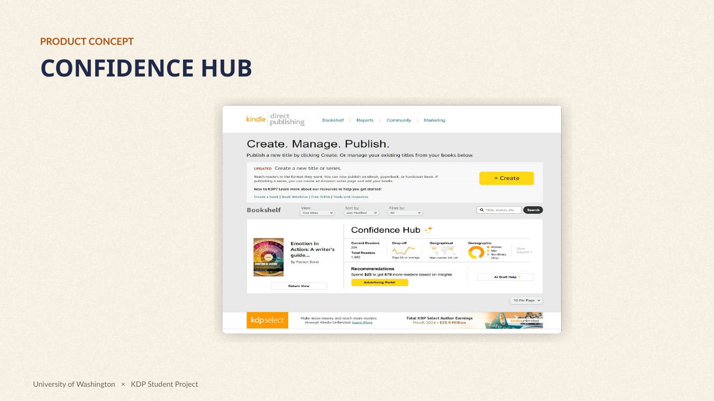
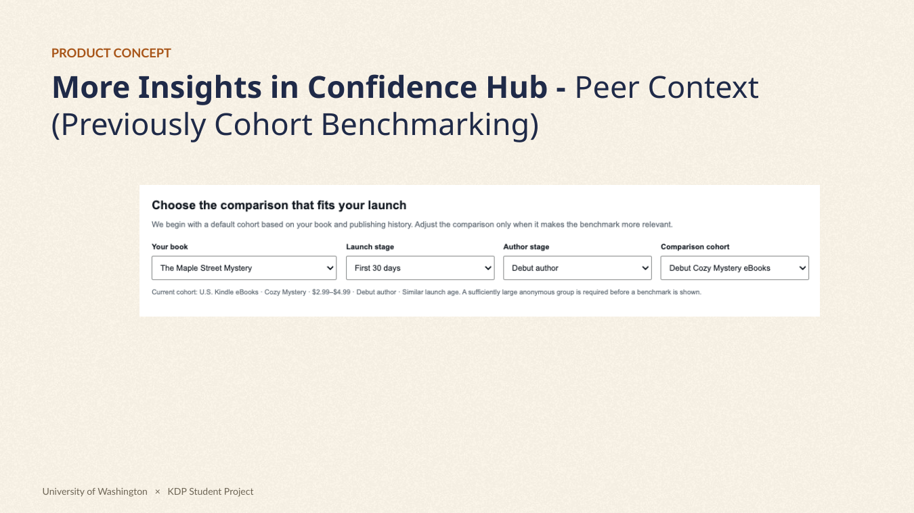
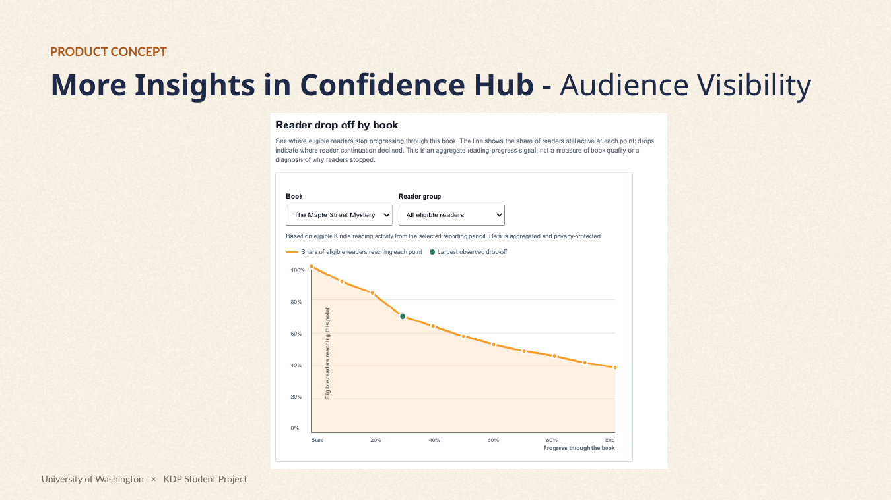
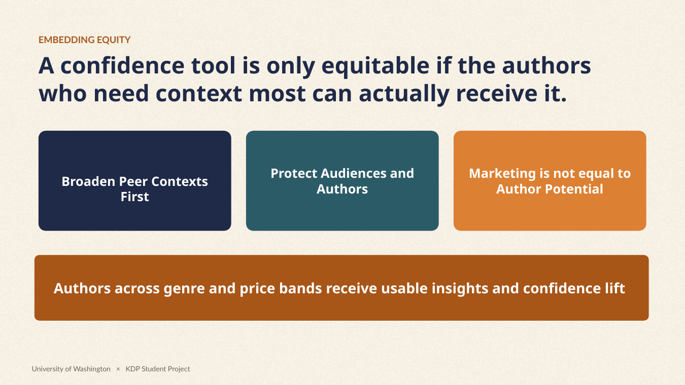
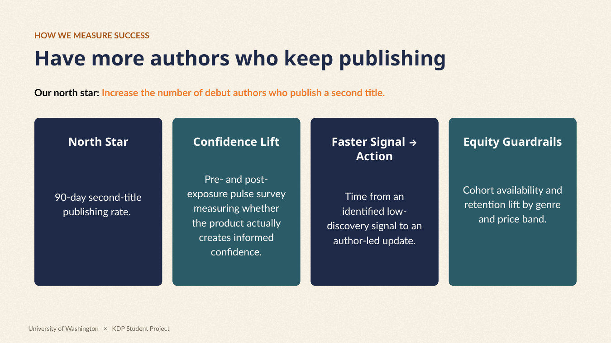

Human need
Make progress legible
Help authors interpret their experience without reducing creative work to financial performance.
How I led the Author Confidence workstream for a Kindle Direct Publishing student project, exploring a deceptively difficult question: What should a marketplace tell creators when numbers alone cannot tell them what to do?

Independent authors can publish a book and see sales, royalties and page-read metrics, yet still struggle to answer: Is anyone discovering my work? Is my launch unusual? What do these signals mean for me? In the team's 2026 problem framing, the confidence gap sat between publishing and continued growth.
Help authors interpret their experience without reducing creative work to financial performance.
Provide context for decisions without automatic coaching, forced next steps, or revenue promises.
Our hypothesis: more informed confidence could encourage authors to keep publishing, enriching the creator ecosystem.
The class approached KDP as a single author-to-reader ecosystem. Four student groups focused on different points in the journey; I led the group investigating the confidence gap.
Workstream labels reflect the integrated journey described during the course. Four groups worked on author discovery, author confidence, humanizing support, and reader discovery/engagement.
I guided the Author Confidence team's problem framing and product exploration, undertook extensive secondary/competitive research, challenged the feasibility of early concepts, and helped develop the final Confidence Hub pitch and prototype.
Team: Donna Jo, Yenn Yang, Logan Bennett and Chase Broderick. Chase brought author experience and author-community conversations; the work was collaborative.
“What has to be true for this problem to disappear?”
A challenge from the course guidance pushed us beyond the symptom “authors lack confidence” toward the underlying causes: uncertainty, interpretation, trust, and access to meaningful feedback.
I explored KDP’s reporting surfaces, public author discussions, third-party publishing tools, creator analytics, self-efficacy research, and author income studies. Our team also drew on author-community conversations conducted by a teammate. I did not personally run formal interviews or usability testing.
Source: Written Word Media, 2024 indie author survey. Respondent motivations are a useful market signal, not a representative census of all KDP authors.
Public author stories and creator discussions exposed a spectrum: authors building a business, authors seeking an audience, and authors publishing primarily for creative expression. Informal feedback from a published author reinforced the discomfort some writers feel with earnings disclosure.
We could not treat every writer as a seller optimizing revenue. Meaningful context had to support different definitions of success, and participation could not depend on volunteering private earnings.
BookBeam / DS Amazon Quick View: third-party tools that estimate sales signals from marketplace information. Useful for testing niche opportunities, but estimates should not be framed as guaranteed earnings.
YouTube / Spotify creator analytics: examples of contextual audience reporting. Their lesson was not to copy every metric, but to make reach and engagement interpretable.
The original opportunity was not another forecasting tool. It was a privacy-conscious interpretation layer close to the KDP reporting experience, subject to actual internal data availability and consent constraints.
Self-efficacy research points toward agency, mastery, and interpretation. We connected this to the product question: would showing progress and meaningful peer context help authors make more informed judgments?
The theory supported our hypothesis but did not prove that a KDP dashboard would increase publishing frequency. That outcome would still require user testing and controlled measurement.
Our 2026 audit examined how authors accessed sales, royalties, Kindle Unlimited page reads, and advertising metrics, and where interpretation depended on off-platform advice.
Numbers could answer what happened. They often did not answer what is normal for a book like mine or where in the audience journey should I investigate. Some more granular signals proposed in the prototype were hypothetical and were not verified as accessible to KDP.
Evidence standard: public sources, secondary research, product observation, and informal qualitative inputs. No private KDP analytics were available; the concept was not validated with a representative user study.
This wasn't a straight line from an insight to a polished dashboard. The meaningful work was in deciding what not to build, what not to promise, and whose trust would be affected.
Challenge: raw information could be difficult to interpret, anxiety-inducing, or irrelevant to writers who aren't publishing primarily for money. Shift: prioritize intelligible context over information volume.
Challenge: third-party estimates were imperfect; requiring authors to share their earnings was uncomfortable and difficult to justify. An informal conversation with a published author, my own feasibility assessment, and feedback from KDP stakeholder Rachel reinforced that direction. Shift: no public earnings disclosure, no earnings prediction, no guaranteed results.
Challenge: a prescriptive system could confuse correlation with causation, privilege commercial optimization, and undermine creative autonomy. Shift: show observations and possible areas to explore, leaving decisions with the author.
Decision: propose a Confidence Hub with two complementary components: matched, anonymous Peer Context and an aggregated Audience Visibility view. The promise is better understanding, not guaranteed sales or publishing success.
“Your book had 340 page reads.”
A fact. The author still has to guess what it means.
“Readers are discovering the detail page, but few move to the sample.”
A hypothesis-generating observation, not an instruction or a claim about why readers behave that way. Illustrative wording.
A proposed interpretation layer within KDP, meant to help authors understand their launch and audience response in context. It deliberately avoids making financial promises or automatically changing an author's publishing strategy.
Compare a launch against an anonymous, appropriately matched range by genre, launch timing, price band and experience stage, when a sufficiently reliable cohort exists.
Final stakeholder deck also uses the more accessible term “Peer Context” alongside the earlier label “Cohort Benchmarking.”

A proposed funnel and audience layer that contextualizes discovery, book-page visits, reading signals, and broad aggregate audience trends.
The availability of specific reader-event, retention, and demographic signals would require internal feasibility and privacy review. Prototype values are fictional.


Averages and dashboards can privilege authors with large audiences. Our PRD recognized that smaller genres, niche languages, and creators with limited marketing resources may have less data, making them the easiest users to exclude.

Broaden comparison groups transparently or withhold an unreliable benchmark; track availability by genre and price band.
Use descriptive ranges and neutral language; test whether comparison lowers confidence for new and niche authors.
Only publish aggregated, thresholded signals. Reader demographics shown in an early visual exploration are not verified feasible or appropriate.
Keep the experience optional and avoid turning creativity into a performance scorecard.
We proposed success measures that connect author understanding with marketplace health, while checking whether the product works equitably. These were proposed metrics, not achieved results.
| Metric | Question it answers | Interpretation / caution |
|---|---|---|
| Confidence lift | Do authors feel better able to understand their performance after exposure? | Short survey; measure clarity, not just positive sentiment. |
| Return to publishing | Does the experience relate to a greater likelihood of publishing another title? | Test with a holdout and sufficiently long follow-up; writing timelines vary widely. |
| Signal-to-action time | Do authors investigate or update controllable listing elements after seeing interpreted signals? | Action is not always improvement; avoid incentivizing unnecessary changes. |
| Equity coverage | Do lower-volume genres and price bands receive reliable context? | Track fallback / no-data rates, not only average feature engagement. |
| Trust & negative effects | Do benchmarks mislead, pressure or discourage authors? | Qualitative testing and opt-out / feedback signals should complement growth metrics. |

The complete 25-slide final deck, preserved as presented. Scroll within the viewer to move through the slides, or open it separately. The case-study narrative above explains the decisions behind the pitch.
If the embedded PDF does not display in your browser, use Open full deck. This is a student proposal, not an official KDP product announcement.
These are the HTML prototypes developed for the student concept. Open the full-size experiences to explore the screens and interactions. All numbers and reader signals are illustrative.
Prototype fidelity caveat: some early exploratory views include demographic, reader-retention and engagement estimates. These require product, privacy, consent and instrumentation validation before being considered feasible. The prototype is not a live KDP interface.
In my recollection of our KDP stakeholder discussion, Rachel supported the privacy concerns around public earnings disclosure. Stakeholders responded positively to the trust framing, the distinction between insight and prescriptive advice, and our proposed success measures. Some terminology, including “cohort benchmarking,” needed clearer explanation.
Qualitative recollection from the project lead; not a verbatim quote, endorsement, implementation commitment or measured result.
Interview debut, growing and niche-market authors; test whether benchmark language reassures or discourages; verify event-level data feasibility and privacy; pilot a low-risk interpretation layer; then run a controlled experiment with both outcome and equity guardrails.
Retrospective next steps. No formal usability experiment or KDP production pilot was completed in this class project.
Existing public studies supported the need to distinguish commercial from creative motivations and provided a theoretical basis for self-efficacy. Observations of creator products informed the interface concept. The effects of peer comparison on confidence, the existence of usable reader-event data, and any increase in repeat publishing were hypotheses, not demonstrated outcomes.
I led the Author Confidence team within the four-workstream class project and contributed independently to extensive product, market and competitive research. The PRD and final pitch were team deliverables with Yenn Yang, Logan Bennett and Chase Broderick. Chase brought author experience and conducted conversations in his author community; I do not claim those interviews as mine.
We did not propose publishing another author's earnings, forecasting individual royalties, replacing creative judgment with AI advice, or building an entire third-party author community inside KDP. These boundaries followed our trust, organizational-fit and feasibility analysis.
The product decision I stand by: make uncertainty easier to understand, without pretending you can eliminate it.
Good marketplace products help participants exercise agency. They don't need to promise a specific outcome to create value.
I went in trying to make author data more useful. I came out thinking more carefully about how a marketplace earns trust, serves people with different motivations, and decides what not to build.
I initially explored more dashboards and sales signals. But raw figures, without a meaningful reference point, could leave authors more uncertain.
Design for decisions people can understand, not just data they can access.
Authors publishing for income and those publishing for creative fulfillment don't necessarily want the same feedback or next step.
Understand each participant's definition of value before optimizing their journey.
I dropped the idea of asking authors to disclose earnings after assessing feasibility, hearing an author's discomfort, and discussing privacy with a KDP stakeholder.
Useful data isn't automatically data a platform should collect or expose.
The shift: I now approach marketplace products by asking whose progress we're helping, what they can realistically control, and what a platform must protect to earn their continued participation. These are principles I'm carrying forward, not claims that Confidence Hub was launched or validated.
Revisit the decisions ↑Project artifacts: Author Confidence final stakeholder deck (Aug 17, 2026); team PRD and working drafts; project plan; personal research notes; interactive HTML prototypes. External references below reflect the sources used or reviewed during the project, rather than claims about current KDP functionality.